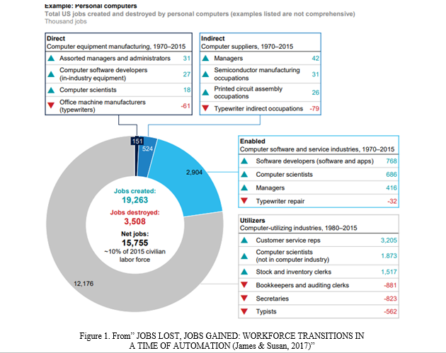
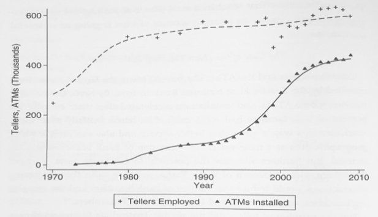

By the rise of automation, most people think they will face an unemployment crisis in the near future. Undeniably, robots do replace some of our jobs. However, since the invention of automation, this is not the first time that robots threat people’s job positions. The society can always find a way to adapt around that. As an individual, the only thing we need to do is to follow the adaptation.
The development of technology always threatens employment, especially in industry. According to Peter Fleming in 2018, “Given how industrial production is traditionally organized around a deep division of labor in which tasks are broken down into standardized and repetitive tasks, factory jobs were always in danger of being replaced by machines as soon as engineering science caught up (Peter, 2018).” There have been many inventions recently that put people under the risk of unemployment such as the driverless car and IBM’s Watson Explore. However, none of these inventions have caused a huge unemployment crisis yet. In fact, we now have more job growth than at any time in history.
Vermeulen and his colleagues investigated the impact of automation on employment throughout history. They worked with reputatable data on employment and pointed out that “the job loss in the applying sector is limited, while the potential for job creation is substantial (2018).” In addition, those “end of work” articles in the media might concentrate too much on the limited unemployment sides and thus create unnecessary panic in society.
Robots will affect most of the jobs in the world. According to the McKinsey Global Institute, “around 400 to 800 million jobs will be taken by 2030 ”, and at least one-third of the constituent activities in about 60 percent of occupations will be replaced by automatons (James & Susan, 2017). More than that, robots will create a large demand for higher education like programming and engineering such that an over-saturation of academics will take place.
Luckily for us, automation rarley takes over entire job sectors. Due to technical limitaions, most automated systems nowadays still require humans to work. For example, assembly lines still need people to maintain and do quality assurance; surgergical robots cannot work without doctors. Waldrop in his article “The future of work: Will robots take my job?” stated that “There was only one occupation that you could say was clearly automated out of existence — elevator operators (2018).”
In fact, the automation can make more working positions both by stimulating the industry and creating a new job. By promoting the industry, market demands will be enhanced and create more positions than robots take from us. In 2015, Bessen worked on the relationship between the rise of ATM and the tellers, a job relates to banking. This plot shows the result.
